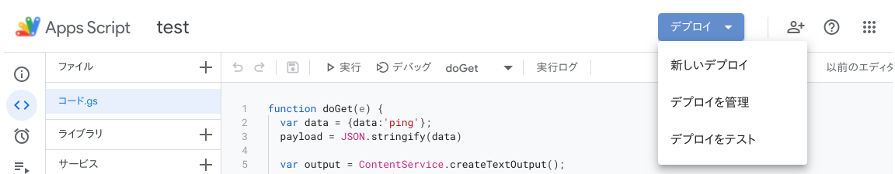

翻訳用のAPIを簡単に利用したいことあると思います。
Google TranslateはAPIを公開してますが、気軽に使う場合には少し不便です。
そういう場合は、Google Apps ScriptからGoogle Translateの機能を使うと便利です。
結論
LanguageApp.translate(value, "en", "ja");プロジェクトの作成
以下のURLにアクセスするか、Google Driveから新規＞その他＞Google Apps Scriptを選択することで作成できます。
最初のコード
https://developers.google.com/apps-script/guides/web
doGetという関数を作ります。 これでGET requestが来たときにこの関数が走ります。
function doGet(e) {
Logger.log("hello!")
}実行ボタンから、実行します。
実際にrequestが来たときに、jsonを返せるように関数を追加します。
function doGet(e) {
Logger.log("hello!")
return responseJson('ping')
}
function responseJson(data) {
const d = {'data': data}
payload = JSON.stringify(d)
var output = ContentService.createTextOutput();
output.setMimeType(ContentService.MimeType.JSON);
output.setContent(payload);
return output;
}左上の新しいデプロイから、デプロイします。

デプロイが完了すると、URLが生成されるので、リクエストを送ります。
curlの場合、リダイレクトを許可するようにオプション-Lが必要です。
$ curl -L -X GET https://script.google.com/macros/s/aaaaaaaaaaaaaaaaaa/exec
{"data":"ping"}指定したbodyが返ってきているのが確認できます。
Google Translateを使う
使い方はシンプルで、以下の関数を呼び出すだけです。
LanguageApp.translate(value, "en", "ja");Parameters
| Name | Type | Description |
|---|---|---|
| text | String | the text to translate |
| sourceLanguage | String | the language code in which text is written. If it is set to the empty string, the source language code will be auto-detected |
| targetLanguage | String | the language code to which the text should be translated |
Return
String — the translated text
https://developers.google.com/apps-script/reference/language/language-app?hl=ja
GASからGoogle Translateを使う
Post requestがあったときに、動作するようにdoPostを追加します。
JSON.parseでrequest bodyをパースします。
function doPost(e) {
if (!e || !e.postData) {
return responseJson('not set request body')
}
}翻訳部分を追加します。
今回のbodyは、{"title": "title", "summary":"I am running" }のような想定です。
function doPost(e) {
if (!e || !e.postData) {
return responseJson('not set request body')
}
const params = JSON.parse(e.postData.getDataAsString());
if (params.title && params.summary) {
const title = t(params.title)
const summary = t(params.summary)
return responseJson({title_en: title, summary_en: summary});
} else {
return responseJson('not set title or summary')
}
}
function t(value){
return LanguageApp.translate(value, "en", "ja");
}リクエストを投げる
curl -L -X POST -H "Content-Type: application/json" -d '{"title":"title", "summary":"I am running"}' https://script.google.com/macros/s/aaaaaaaaaa/exec